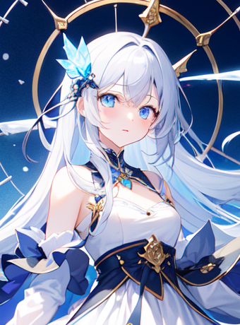

Forever & Always
我迷迷糊糊地醒了过来，一天一夜的长途火车坐着实在累人，我摇了摇头试图让自己清醒一下，然后看向窗外，远处连绵的雪山证明这趟列车不久后就要到达目的地 Zeirtin 了。
如果你不知道的话，Zeirtin 是大陆北方的一个大型都市，最出名的产业是钟表和旅游业。
不过我来这里显然并不只是为了旅游的。
两周前 Sivir 告诉我 ARC 在更新他们档案库里面的信息，需要不少人再去调查之前记录过的超常事物，问我有没有兴趣，我看报酬还不错，所以就答应了。
但是我没想到的是他们给我安排的调查对象。
ARC-0060
……
描述：ARC-0060 是一位半神，自称 Khroni，外观为一人类女性，当前居住于 Zeirtin 北部的山脉之中，具体位置不定。

……
Sivir 给我的理由是我的 CRV 很高所以适合接触这一类可能影响认知的存在，虽然理论上是这样，但是总有种好像吃亏了一样的感觉。